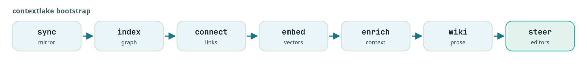

Keeping it fresh
Run the whole pipeline in one command, schedule it, re-index on commit with a git hook, and watch an unattended run.

bootstrap runs the whole pipeline in one command, and it is safe to re-run, so the same command
that sets a workspace up is the one that keeps it current. This page covers that command, how to
schedule it, how to re-index the moment you commit, and how to tell afterwards whether an
unattended run went well.
flowchart TD CR(["cron or a systemd timer"]) --> BS["contextlake bootstrap
re-indexes only the repos
whose HEAD moved"] HK(["a commit, via the
post-commit hook"]) --> IX["contextlake kb index,
detached"] BS --> LK["one advisory single-writer lock:
the second run refuses
rather than interleaving"] IX --> LK LK --> ST[("the store")] BS -.->|"--log-file,
--metrics-file"| EV[("the run's own evidence")] EV --> AL(["your alert, on the exit code
or on staleness"])
Two ways in, one store. The schedule keeps the whole fleet current, the hook keeps the repo you are editing current, and the lock is what stops the two of them from writing at once.
Prerequisites#
- A configured workspace:
contextlake init, or the two config files in place. See Configuration. - The
[kb]extra installed, for everything past the mirror stage. See Install and upgrade.
One command for the whole pipeline#

contextlake bootstrap --llm builtin
--llm builtin powers the wiki stage with a zero-setup CPU model, so this single command builds the
whole knowledge layer (graph, vectors, and wiki) for every repo. On a pip install, builtin needs
one extra step first, contextlake doctor --fix llm-local (see Install and
upgrade); skip that step entirely with
--llm ollama, which needs no compiler at all. Use --llm ollama, openai,
anthropic, cli or auto for better prose; the pre-command form
contextlake --llm builtin bootstrap also works. Without any --llm, and with [llm] disabled in
kb.toml, the wiki stage no-ops and everything else still runs.
The stages run in this order, and each can be skipped except the two marked otherwise:
| # | Stage | Skip with |
|---|---|---|
| 1 | Mirror repositories (fetch, clone, update, branches, verify) | --no-sync |
| 2 | Audit repositories for health and age | --no-audit |
| 3 | Index the code graph | not skippable |
| 4 | Connect knowledge sources | --no-connect |
| 5 | Build semantic vectors | --no-embed |
| 6 | Enrich from connected sources | --no-enrich |
| 7 | Generate the wiki | --no-wiki |
| 8 | Draw the architecture | --no-diagrams |
| 9 | Write editor steering (.mcp.json, AGENTS.md, and so on) |
not skippable |
Stage 8 writes one HTML diagram into <store>/graphs/, choosing the view from the store's shape: a
store holding a single repository gets that repository's symbol graph (graph.html), and a store
holding several gets the fleet map (overview.html). It reports the node and edge counts it drew,
so a diagram with nothing in it says so rather than reporting a bare success.
A failing knowledge-layer stage (3 to 9) warns, records the failure, and lets the rest of the run
continue. Indexing is the exception: the graph is what every later stage reads, so if index
fails the run stops there and exits 1 rather than building vectors and prose on top of nothing. An
unreachable remote in stage 1 is also recorded and continued past, so the knowledge layer still gets
built from the clones already on disk.
Stage 2 is the one gap in that promise: the audit stage is not wrapped in the same guard, so an error there, which in practice means failing to write the report file, ends the run before indexing starts.
Both config files are read from their default locations (~/.contextlake.ini and
~/.contextlake/kb.toml, or the nearest ancestor directory's .contextlake.ini /
.contextlake.kb.toml if one exists, see
Directory-scoped config); pass --config to point
elsewhere. An unrecognized [kb] key or table is warned about and ignored, so a typo like store
for store_dir is surfaced rather than silently dropping the run into the wrong store. An explicit
--config path that does not exist is a hard error rather than a silent fall-through to the next
file in the precedence chain, which could point at a completely different store than the one you
meant.
Composing the stages yourself#
Every stage is standalone, idempotent, and composable:
| Use case | Command(s) |
|---|---|
| Blank to fully enriched workspace | contextlake init then contextlake bootstrap |
| Add a connector, re-enrich the wiki | contextlake kb source add jira ... then contextlake kb enrich then contextlake kb wiki |
| Single repo, enriched | contextlake kb index . then contextlake kb source add ... then contextlake kb enrich then contextlake kb wiki then contextlake kb serve |
| Refresh enrichment only | contextlake kb enrich then contextlake kb wiki --force |
| Manage or inspect sources | contextlake kb source list or contextlake kb source test <name> or contextlake doctor |
| Disable a noisy source | contextlake kb source disable <name> then re-run contextlake kb enrich |
Keep it fresh on a schedule#
bootstrap is incremental and branch-safe: it re-mirrors, re-indexes only the repos whose HEAD
moved (or whose shard was built by an older parser), refreshes the knowledge layer, and rewrites the
steering, without touching an in-progress working tree.
Note
contextlake installs no scheduler of its own. There is no built-in cron entry and no systemd unit written for you; the one thing it does install is the git hook in the next section. Everything below is you wiring it to your own scheduler, which is why the exit codes and the metrics file matter.
Before your first cron entry#
- Have a config file. Cron does not read the directory you happened to be in when you tested.
contextlake init # writes the file for you, prompting for each value
# or copy the shipped template and fill it in by hand:
cp .contextlake.ini.example ~/.contextlake.ini
- Use absolute paths.
which contextlakeand use what it prints; cron'sPATHis not yours. - Run the exact command in a shell first. Most "cron is broken" reports are the command failing the same way interactively.
Cron entries that do something useful#
# a full sync every day at 02:00
0 2 * * * cd /home/user/work && /usr/bin/contextlake mirror sync >> /tmp/contextlake.log 2>&1
# hourly updates, no branch switching (for a CI box that should stay put)
0 * * * * cd /home/user/work && /usr/bin/contextlake mirror update >> /tmp/contextlake.log 2>&1
# the whole pipeline, every 30 minutes
*/30 * * * * /usr/bin/contextlake bootstrap >> ~/.contextlake/refresh.log 2>&1
Or use the shipped systemd units as a starting point:
examples/contextlake.service and
examples/contextlake.timer.
More than one workspace#
Give each workspace its own config file and name it explicitly:
cat > ~/.contextlake_primary.ini << 'EOF'
[contextlake]
work_dir = ~/work
gitlab_group = example-group-primary
EOF
cat > ~/.contextlake_secondary.ini << 'EOF'
[contextlake]
work_dir = ~/Projects/Secondary
gitlab_group = example-group-secondary
EOF
0 2 * * * cd /home/user/work && /usr/bin/contextlake --config ~/.contextlake_primary.ini mirror sync >> /tmp/primary.log 2>&1
0 */6 * * * cd /home/user/work && /usr/bin/contextlake --config ~/.contextlake_secondary.ini mirror update >> /tmp/secondary.log 2>&1
Re-index on commit (git hook)#
For freshness between scheduled runs, install a post-commit hook that re-indexes a repo the moment
you commit to it:
contextlake kb hook install # the repo in the current directory
contextlake kb hook install --workspace ~/src # every git repo under a mirror
contextlake kb hook status --workspace ~/src # which repos are wired
contextlake kb hook uninstall # remove it (any pre-existing hook is kept)
The hook runs contextlake kb index <repo> detached, so the commit returns immediately, and it
re-uses the repo's stored id so it updates the same graph node rather than creating a duplicate. It
is written inside a delimited managed block, so a hook you already had is appended to rather than
overwritten, and only that block is refreshed on re-runs.
Mirror-wide work (fetching new clones, pruning) still belongs to bootstrap on a schedule. The
hook keeps your local edits current in between.
Refresh when a coding session starts#
Cron covers the fleet and the commit hook covers your own edits, and there is still a gap between
them: you sit down and start work against a graph that is quietly behind. Nothing announces
that. index skips a repo whose head has not moved, which is the right default and also means a
store can be arbitrarily out of date while every command it serves looks healthy.
$ contextlake kb refresh
⚠ contextlake: 12 repositories, 3 repo(s) moved since indexing. Run `contextlake kb index` to bring it up to date.
moved: payments-api
moved: billing-worker
moved: checkout-ui
checked 12/12 in 0.06s
It reads only. Add --refresh and it starts kb index then kb steer in the background and
returns immediately, so nothing waits on a re-index. --budget caps how long the check itself may
take on a large fleet; whatever it did not reach is reported as unchecked rather than passed over
silently.
contextlake kb steer installs this as a Claude Code SessionStart hook, so every session
opens with one line saying whether the graph describes today's code, and the update already running:
{ "hooks": { "SessionStart": [
{ "hooks": [{ "type": "command",
"command": "contextlake kb refresh --hook --refresh", "timeout": 20 }] }
] } }
Other hooks in that file are preserved, and re-running steer replaces our entry instead of adding
a second copy. Claude Code is the only editor whose session-hook format this has been checked
against; nothing here claims the others. Set CONTEXTLAKE_NO_SESSION_REFRESH=1 to switch it off
without editing the file.
If two contextlake processes ever target one store at once (a scheduled bootstrap and a
hook-triggered index, say), the second takes an advisory single-writer lock
(<store_dir>/.contextlake.lock) and refuses rather than interleaving SQLite writes, naming the
process that holds it. A lock left by a crashed run is reclaimed automatically; override it (rarely
correct) with CONTEXTLAKE_ALLOW_CONCURRENT=1.
Watching an unattended run#
An exit code tells you that something broke. These flags tell you what, after the fact.
0 2 * * * cd /home/user/work && /usr/bin/contextlake mirror sync \
--log-format json --log-file /var/log/contextlake/run.log \
--metrics-file /var/lib/node_exporter/textfile/contextlake.prom
--log-format jsonemits one JSON object per line, each stamped with arun_id(pin your own withCONTEXTLAKE_RUN_ID), thecommand, and, on per-repo lines,repo,status,duration_ms, anderror_typeon failures.--metrics-filewrites Prometheus textfile-collector output: run duration, exit code, repo counts by outcome, graph size, and a last-success timestamp that survives a failing run. Point node_exporter's--collector.textfile.directoryat that directory.--log-filekeeps a full-detail copy and is redacted by default (workspace paths,$HOME, the group name, a self-hosted forge hostname, repository names), so the copy you attach to a bug report needs no manual scrubbing.--redactextends that to the console;--no-redactturns it off entirely.--access-logturns on request logging for the local HTTP servers (kb dashboard,kb graph --serve,kb serve --transport http|sse), which are otherwise silent.
For the exit codes to alert on, the JSON shape, and the metric names, see Reading the console output.
Log files and rotation#
--log-file rotates itself: it uses a rotating handler capped at 5 MB with 3 backups
(setup_logging in src/contextlake/logging_setup.py), so that file cannot grow without bound and
needs no logrotate entry.
A shell redirect (>> /tmp/contextlake.log) is a different thing and does grow without bound.
Rotate that one yourself:
sudo tee /etc/logrotate.d/contextlake << 'EOF'
/tmp/contextlake.log {
daily
rotate 7
compress
delaycompress
missingok
notifempty
create 0644 user user
}
EOF
Alerting on a failed run#
cat > /home/user/scripts/contextlake_wrapper.sh << 'EOF'
#!/bin/bash
cd /home/user/work
contextlake mirror sync >> /tmp/contextlake.log 2>&1
EXIT_CODE=$?
if [ $EXIT_CODE -ne 0 ]; then
echo "contextlake sync failed with exit code $EXIT_CODE" | mail -s "contextlake sync failure" user@example.com
fi
EOF
chmod +x /home/user/scripts/contextlake_wrapper.sh
If you would rather alert on staleness than on failure, use the metrics file:
contextlake_last_success_timestamp_seconds is carried forward by a failing run rather than erased,
which is what makes a "no successful sync for six hours" alert possible.
Verification#
After a scheduled run has fired at least once:
contextlake doctor
tail -n 5 /var/log/contextlake/run.log
doctor should report a reachable store with non-zero repo, node and edge counts, and no repos
flagged as built by an older parser. The log's last lines should carry the same run_id across the
pipeline's stages, which is how you confirm you are reading one run and not two interleaved ones.
See also#
- Index the code graph, the stage everything else builds on
- Generate the wiki, the stage that needs a model
- Reading the console output, exit codes, JSON logs, and metric names
- Troubleshooting, when a scheduled run stops working